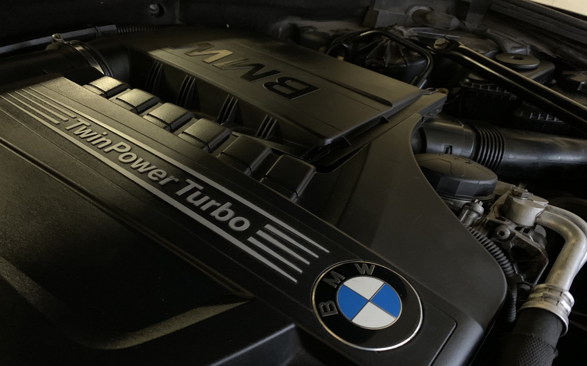
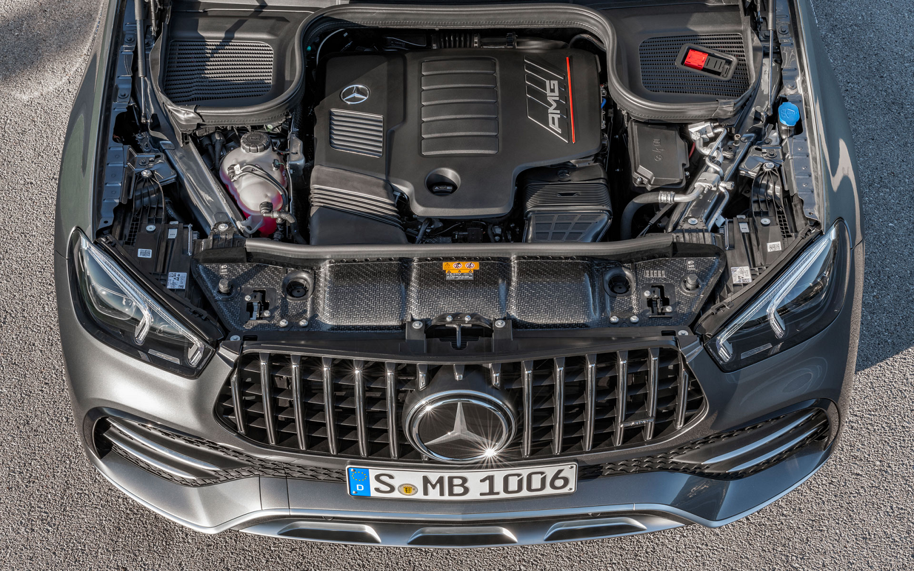

Из всех двигателей в линейке дизелей эта модель считается самой ходовой. Она занимает первые позиции по стойкости, пробегу и выносливости. Мотор пятицилиндровый, двухклапанный, с механическим ТНВД производства Bosch. Его выпускали целых 17 лет, с 1985 до 2002 года. Силовой агрегат по мощности уступает конкурентам. Его показатели колеблются от 90 до 130 л. с. в зависимости от модификации.
Этот двигатель по уровню надёжности превзошёл все ожидания. Он является ярким представителем популярной серии S. Его любят за неприхотливость, прекрасную ходимость, высокую ремонтопригодность. Он двухцилиндровый, четырёх- или шестнадцатиклапанный, имеет простой распределительный впрыск и ременной привод. Его выпускали по 2000 год. Мощность силового агрегата — до 140 л. с.
Эти модели по праву называют легендой. Их ресурс при достаточно живом характере — свыше 600 тыс. километров. Их выпускали до 2007 года в самых разнообразных вариациях: встречались модели с усовершенствованной системой впрыска и турбированной системой.
Этот ДВС по степени надёжности превосходит своих предшественников. Цилиндровый блок выполнен из чугуна, головка блока имеет четыре клапана. Дополнительно силовой агрегат оснащают выносливой системой газораспределения. Он смело способен пройти 700 км до первого капремонта без серьёзных вмешательств.